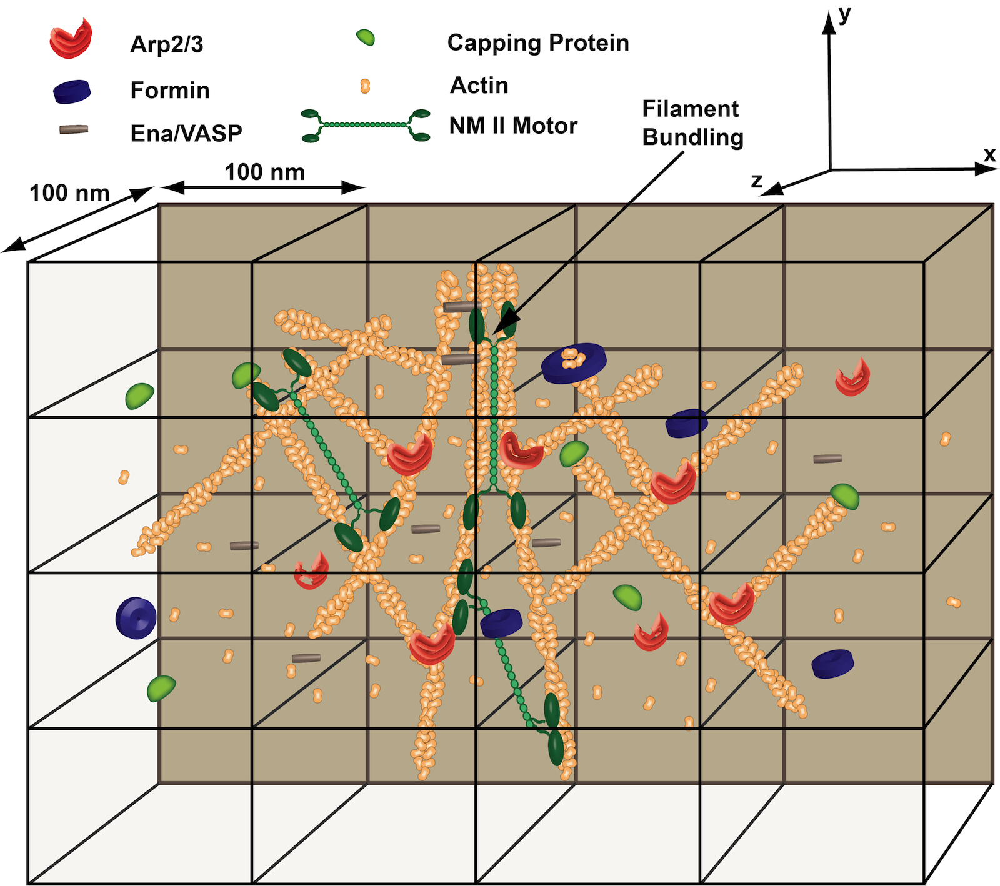

MEDYAN - Mechanochemical Dynamics of Active Networks
Welcome to the webpage of the MEDYAN, an efficient and scalable computational model for mechanochemical simulations of active matter networks created by the Papoian lab at the University of Maryland. This webpage contains documentation and examples for the MEDYAN software package, which is implemented in C++. The source code for this package is downloadable for scientific use.
Background
The cell cytoskeleton plays a key role in human biology and disease, contributing ubiquitously to such important processes as embryonic development, wound repair and cancer metastasis. The Papoian laboratory is interested in gaining deeper understanding of the physical chemistry behind these complex, far-from-equilibrium mechanochemical processes.
Latest news
March 2022 - MEDYAN 5.4.0 is published. [Download]
March 2022 - MEDYAN 5.3.0 is published.
February 2022 - MEDYAN 5.2.1 is published.
December 2021 - MEDYAN 5.1.0 is published.
August 2021 - Our paper titled Membrane-MEDYAN: Simulating Deformable Vesicles Containing Complex Cytoskeletal Networks was published in JPCB and chosen as the cover.
July 2021 - MEDYAN 5.0.0 is published.
July 2021 - MEDYAN 4.3.0 is published.
July 2021 - MEDYAN 4.2.0 is published.
March 2021 - Our paper titled Segmental Lennard-Jones interactions for semi-flexible polymer networks was published in Molecular Physics.
Funding sources